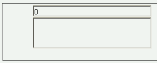
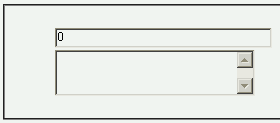

Internet Explorer (Windows) CSSバグリスト
テキスト入力フォームの幅が文字入力時に変化する(5.5/6.0)
症状
<input type="text">、<input type="password">およびtextarea要素が以下の条件を満たすとき、入力領域に何らかの文字を入力した時にその幅が広がる。
- input, textarea要素のwidthプロパティを%単位の値で指定している。
- （input要素のみ）line-heightプロパティにnormal, inherit以外の値を指定している。
- input, textarea要素の祖先要素に左マージンや左パディングを指定したものがある（body要素を除く）。
例示
<form>
<div style="margin-left:3em;">
<input type="text" style="width:30%; line-height:1;">
</div>
<div style="margin-left:3em;">
<textarea style="width:30%; height:3em;"></textarea>
</div>
</form>
入力領域に何か文字を入力してください。
スクリーンショット
input要素の入力領域に文字を入力した後の状態です。
Netscape7.1標準モード
WinIE6.0標準モード
補足
- 祖先要素の左マージンや左パディングの値が大きいほど、またinputおよびtextarea要素自身のwidthプロパティの値が大きいほど、入力領域の幅が広がる量も大きくなるようです。
- WinIE5.0以前では文書を表示した段階で既に幅が広がった状態（5.5以降で文字を入力した後の状態と同じ）になります。
- 参考資料：文字を打つとビロンと伸びるフォームアイテム（ねこめしにっき）
修正状況
WinIE6.0の標準モードと互換モードで不具合の発生を確認しました。